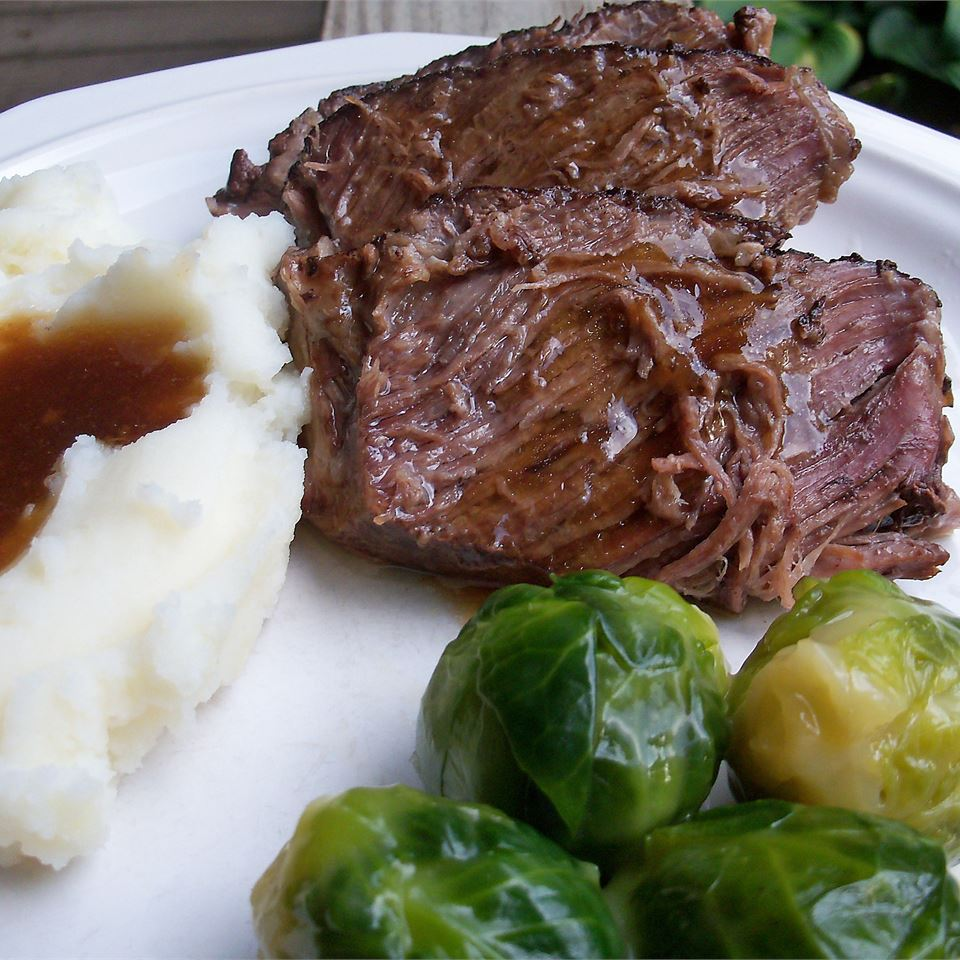

Slow Cooker Roast Beef
A tender 10-hour roast beef that will leave your relatives wanting more next Thanksgiving.
Ingredients
- Roast Beef
- Worcestire Sauce
- Olive Oil
Steps
- Place the roast beef into the baking pan.
- Cover the roast beef in worcestire sauce
- Place into the oven at 450 degrees for 5 minutes.
- Finally, enjoy!
Slow Cooker Roast Beef Recipe